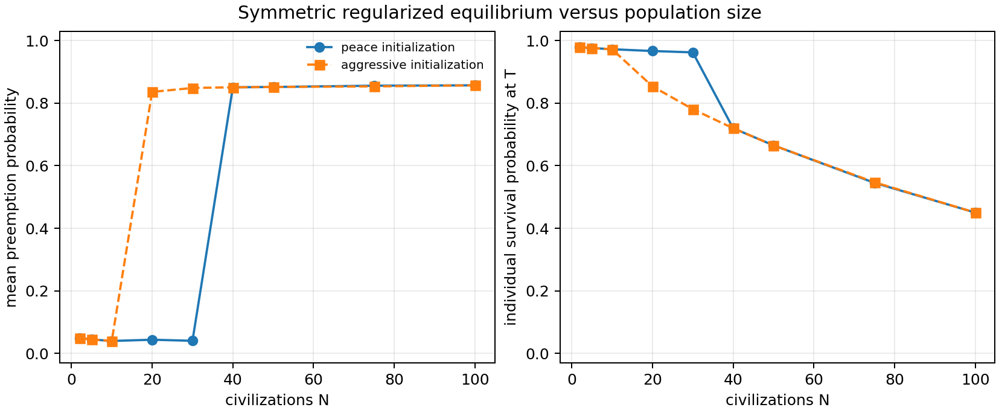

A Mathematical Dark Forest
Can a universe full of intelligent life remain silent because everyone is afraid to speak? A small stochastic game is formulated to see when peaceful civilizations hide, when they strike first, and when both outcomes can be equilibria.
Why might a crowded universe look empty?
Imagine that humanity detects a signal from another star. We learn that someone is there, but almost nothing else. Are they peaceful? Are they afraid of us? Are they already deciding whether we are too dangerous to leave alive?
Any reply we send will take years to arrive, and the answer may take years more. By then, either civilization could be technologically or politically unrecognizable.
This is the unsettling question behind the “dark forest” in Cixin Liu's The Dark Forest. The book calls the study of interstellar strategic behavior Cosmic Sociology. Instead of asking how people or nations behave, it asks what happens when entire civilizations meet across enormous distances in the universe.
The argument begins with three axioms:
- Every civilization wants to survive.
- Civilizations grow and expand.
- Matter, energy, and habitable territory are ultimately limited.
These ideas might create competition among civilizations in the universe, but they do not yet imply immediate war. Two additional mechanisms turn competition into a dark forest.
The chain of suspicion
Suppose civilization A sees civilization B. Even if B appears friendly, A cannot be sure that B really is friendly. More importantly, A cannot know whether B believes that A is friendly. Perhaps B will attack only because it fears that A might attack first.
A can reason about B's fear, B can reason about A's reasoning, and the loop continues. Neither side has to be evil. Fear and uncertainty are enough.
Distance makes this problem much worse. A conversation across light-years is not a conversation in the ordinary sense: it is an exchange of messages about the distant past. A reassuring signal may be honest and still be obsolete by the time it arrives.
Technological explosion
A weak civilization need not remain weak. One or two breakthroughs could allow it to overtake a much older rival. We humans have the first and the second industrial Revolution. “They cannot hurt us today” is therefore not a reliable reason to leave them alone. Waiting for better information also gives the other side time to become overwhelmingly powerful.
Put these mechanisms together and a grim logic appears. Revealing your location is dangerous, so hiding is sensible. If you discover another civilization, a first strike may look safer than waiting for intentions that cannot be verified and technological growth that cannot be predicted. This is the pathetic black forest conclusion.
The crucial point is not that alien civilizations must be aggressive. It is that peaceful civilizations can be pushed toward aggression by the structure of the situation. Cooperation would be better for everyone, but the cost of being wrong about a stranger may be extinction.
Will survival, uncertainty, and technological jumps create a peaceful equilibrium, a dark-forest equilibrium, or a transition between them as the number of civilizations changes?
A general mathematical framework
Let us try to provide a mathematical formulation, and start with a finite number of civilizations. Maybe we can later consider a mean-field approximation. This order matters: attacking one particular civilization can be enormously valuable even when that civilization is negligible relative to the whole population.
State and choices
Civilization \(i\) has state
The components represent its location \(\ell_i\), resources \(R_i\), log technology \(Z_i\), visibility \(V_i\), beliefs \(\mu_i\), and hidden doctrine \(\Theta_i\). It chooses
corresponding to expansion, research, concealment, defense, and target-dependent attack intensity.
Why include all of this? Expansion and research make a civilization stronger, but these need resources, and may reveal its location. Concealment, on the other hand, reduces that danger, but slows growth. Defense helps after an attack, and preemption tries to prevent the attack altogether.
A population that loses mass
Extinction is absorbing, so we use a non-normalized survivor measure:
The shape of \(m_t^N\) describes the surviving civilizations, and its total mass \(n_t^N\) records how many remain. Normalizing too early would lose the important information: the universe should become less dangerous, and resource depletion should slow, when most civilizations are gone.
Finite resources
Let \(Q_t\) denote accessible matter and energy. A simple resource equation is
This makes the “finite matter” assumption operational. Scarcity is not created merely because total matter is constant. It appears because accessible resources are depleted by the expansion of surviving civilizations.
Technological jumps
Technology follows a controlled jump process:
The jump measure has intensity
Ordinary progress is represented by the drift, and a rare, large \(\xi\) represents a technological explosion. Research can increase both the regular growth rate and the probability of a breakthrough.
Delayed information and suspicion
A distant civilization sees a noisy signal from the past:
Its threat belief is a posterior probability such as
The exact belief state is a probability distribution over the target's technology, doctrine, and current condition. The model therefore becomes a partially observed game. The chain of suspicion then lives in the equilibrium fixed point: each civilization filters the other's behavior while knowing that the other is doing the same.
Pairwise attacks
Let \(S(x,y)\) measure the effectiveness of an attack by civilization \(x\) against \(y\). If the two sides attack at effective rates \(a(x,y)S(x,y)\) and \(\widehat a(y,x)S(y,x)\), then the probability that \(y\) strikes first in a simple exponential race is
Only after solving this private strike race do we average over the population of possible targets. This preserves the value of eliminating a particular existential threat.
Survival-first objective
The most literal objective would first maximize the probability of survival and only then optimize growth. For computation, let us use a large loss \(L\) for the absorbing extinction state. The representative civilization's value equation is schematically
The first terms describe ordinary payoffs, diffusion, and technological jumps. The last term is the expected loss from extinction. When \(L\) is large, a small increase in extinction risk can dominate normal economic gains.
Under the optimal policy, the survivor distribution moves forward according to
The general equilibrium couples four objects:
- a backward value equation;
- a forward population equation;
- a resource-depletion equation; and
- a Bayesian filtering equation.
The policy must be optimal given the population, resources, and beliefs—and those paths must be generated by the same policy.
A finite-state game we can compute
The full model is too large for a first experiment, so let's compress it and make it simple first. Assume each surviving civilization has state
where \(k\) is technological level and \(v\) is visibility. At each time it chooses one of three actions:
- Hide: reduce visibility at a small cost.
- Research: increase the chance of ordinary and explosive technological progress, but become easier to detect.
- Preempt: reduce the chance that an opponent attacks first, while paying a larger cost and accepting retaliation risk.
Suspicion feeds on equilibrium behavior
Let \(\bar a_t\) be the fraction of surviving civilizations choosing preemption. Perceived threat is
The background term \(p_0\) captures irreducible uncertainty. The feedback coefficient \(\gamma\) captures self-fulfilling suspicion. If many others preempt, expecting an attack becomes more reasonable, and that expectation can make preemption optimal for everyone else.
Population size changes encounter pressure
If \(\bar v_t\) is the effective visible share, encounter pressure is
The \(N-1\) factor is the finite-population correction. A civilization has more potential dangerous encounters when more civilizations exist.
For a civilization with technology \(k\) and visibility \(v\), waiting produces hazard
Preemption reduces the first-strike part of this hazard but adds retaliation:
The choice to strike is therefore not automatic. It depends on whether first-strike protection outweighs the attack cost and retaliation risk.
Dynamic equilibrium
For action \(a\), the one-period value is
We will use a small logit regularization,
which makes the fixed-point iteration stable. The resulting solution is an \(\varepsilon\)-Nash equilibrium: actions that are slightly worse can still receive a small probability, and the approximation becomes tighter as \(\tau\) decreases.
The computation alternates between solving the value equation backward and evolving the surviving population forward. Because suspicion creates strategic complementarity, we run the solver twice for each \(N\): once from a nearly peaceful policy and once from a nearly universal-preemption policy.
Numerical experiment
We will use four technology levels, a 20-unit horizon, and a period length of 0.25. Extinction has loss \(L=80\). The experiment considers
All parameters are illustrative. They are chosen to expose the model's qualitative mechanisms, not estimated from observations of extraterrestrial life.
| \(N\) | Preemption: peace start |
Preemption: aggressive start |
Survival: peace start |
Survival: aggressive start |
|---|---|---|---|---|
| 2 | 0.049 | 0.049 | 0.979 | 0.979 |
| 5 | 0.045 | 0.045 | 0.976 | 0.976 |
| 10 | 0.040 | 0.040 | 0.972 | 0.972 |
| 20 | 0.044 | 0.836 | 0.966 | 0.854 |
| 30 | 0.041 | 0.848 | 0.962 | 0.781 |
| 40 | 0.850 | 0.850 | 0.720 | 0.720 |
| 50 | 0.851 | 0.851 | 0.665 | 0.665 |
| 75 | 0.856 | 0.853 | 0.545 | 0.547 |
| 100 | 0.857 | 0.857 | 0.450 | 0.450 |
Highlighted rows: the two initializations converge to different equilibria.

Three regimes
1. Low density: \(N\le 10\)
Both initializations converge to the same low-preemption equilibrium. Encounter pressure is small, so paying the cost of preemption is not worthwhile. Individual terminal survival remains above 97 percent.
2. Coexistence: \(N=20\) and \(N=30\)
The peaceful initialization converges to preemption near 4 percent, while the aggressive initialization converges above 83 percent. The same underlying environment supports two self-consistent outcomes.
When civilizations expect restraint, perceived threat stays low and restraint remains optimal. When they expect preemption, suspicion rises, striking first becomes individually rational, and the dark-forest belief validates itself.
The welfare difference is substantial. At \(N=30\), individual survival falls from 0.962 in the peaceful equilibrium to 0.781 in the aggressive equilibrium.
3. High density: \(N\ge 40\)
Both initializations converge to preemption near 85 percent. The larger number of potential encounters makes waiting sufficiently dangerous that the low-preemption fixed point disappears under this calibration. Individual survival falls to 0.450 by \(N=100\).
What does the experiment tell us?
The dark forest is an equilibrium possibility, not a theorem that follows from survival alone. Its emergence depends on the balance among extinction loss, encounter frequency, technological uncertainty, first-strike advantage, attack cost, and retaliation risk.
That last qualification matters. In a calibration with higher retaliation risk, increasing \(N\) favored concealment instead of attack. Density promotes preemption only when striking first reduces expected danger enough to compensate for its costs.
The coexistence region is the most interesting result. Identical civilizations facing identical fundamentals can rationally settle into either restraint or aggression because their beliefs help create the danger they fear. In that sense, the chain of suspicion is not merely psychological. It is an equilibrium-selection mechanism.
What is missing?
This first model deliberately leaves out several important features:
- explicit spatial locations and light-travel delays;
- Bayesian learning over hidden doctrines;
- a depletable resource state and an expansion action;
- pair-specific attacks and exact random opponent counts; and
- births of newly emerging civilizations.
The next useful step is an exact small-\(N\) solver that retains the random vector of opponent states. Comparing it with this anonymous approximation would show when a mean-field description becomes accurate.